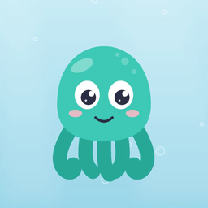

Politique de confidentialité
Bloop Publication, mise à jour le 22 novembre 2026
Français
L'application
Bloop Publication est un outil privé, utilisé uniquement par le propriétaire des chaînes YouTube Bloop FR et Bloop EN pour y publier les épisodes de la série.
Services YouTube
Cet outil utilise les services d'API YouTube. Leur utilisation est soumise aux Conditions d'utilisation de YouTube et aux Règles de confidentialité de Google.
Données utilisées
- Le nom et l'identifiant des deux chaînes.
- Les titres et identifiants de leurs vidéos récentes, pour éviter un double envoi.
- L'état des vidéos envoyées : confidentialité, date de sortie et réglage « conçue pour les enfants ».
- Les statistiques globales de chaque vidéo : vues, temps regardé, durée moyenne et rétention.
Ces statistiques sont des totaux par vidéo. L'outil ne collecte aucune donnée permettant d'identifier un spectateur, y compris un enfant.
Utilisation
Ces données servent uniquement à envoyer les vidéos, à programmer leur sortie, à vérifier leurs réglages et à mesurer ce qui fonctionne pour améliorer la série.
Conservation et partage
Les jetons d'accès Google restent sur l'ordinateur du propriétaire, hors du code source. Les titres, liens, états et statistiques des vidéos peuvent être conservés dans les fichiers privés du projet et dans son outil de suivi Notion. Ils peuvent aussi être lus par Claude, l'assistant d'Anthropic qui aide à piloter la publication. Ces données ne sont ni vendues ni utilisées pour de la publicité.
Suppression
Les jetons sont conservés jusqu'à leur suppression ou leur révocation. L'accès peut être révoqué à tout moment depuis la page des autorisations du compte Google.
Contact
Pour toute question, ouvrez un ticket sur la page GitHub du projet.
English
The application
Bloop Publication is a private tool, used only by the owner of the Bloop FR and Bloop EN YouTube channels to publish the series' episodes.
YouTube services
This tool uses the YouTube API Services. Their use is subject to the YouTube Terms of Service and the Google Privacy Policy.
Data used
- The name and ID of the two channels.
- The titles and IDs of their recent videos, to avoid duplicate uploads.
- The status of uploaded videos: privacy, release date and "made for kids" setting.
- Aggregate statistics for each video: views, watch time, average view duration and retention.
These statistics are per-video totals. The tool collects no data that can identify a viewer, including a child.
How data is used
This data is used only to upload videos, schedule their release, check their settings and measure what works to improve the series.
Storage and sharing
Google access tokens stay on the owner's computer, outside the source code. Video titles, links, statuses and statistics may be kept in the project's private files and in its Notion tracking workspace. They may also be read by Claude, the Anthropic assistant that helps run publishing. This data is not sold or used for advertising.
Deletion
Tokens are kept until they are deleted or revoked. Access can be revoked at any time from the Google Account permissions page.
Contact
For any question, open an issue on the project's GitHub page.